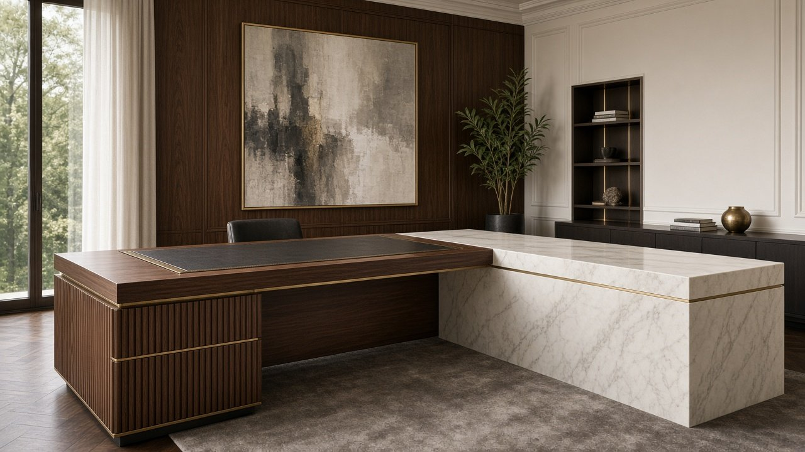
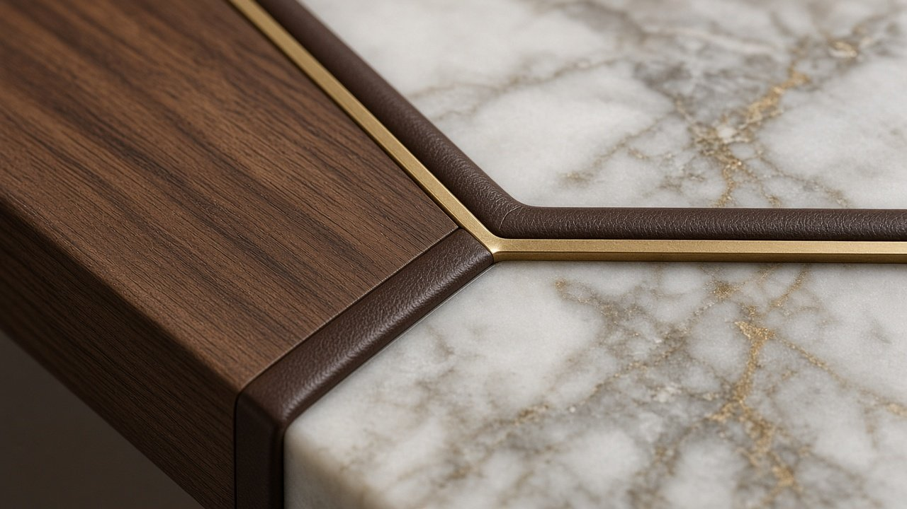
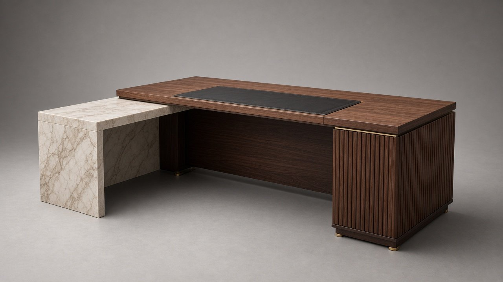
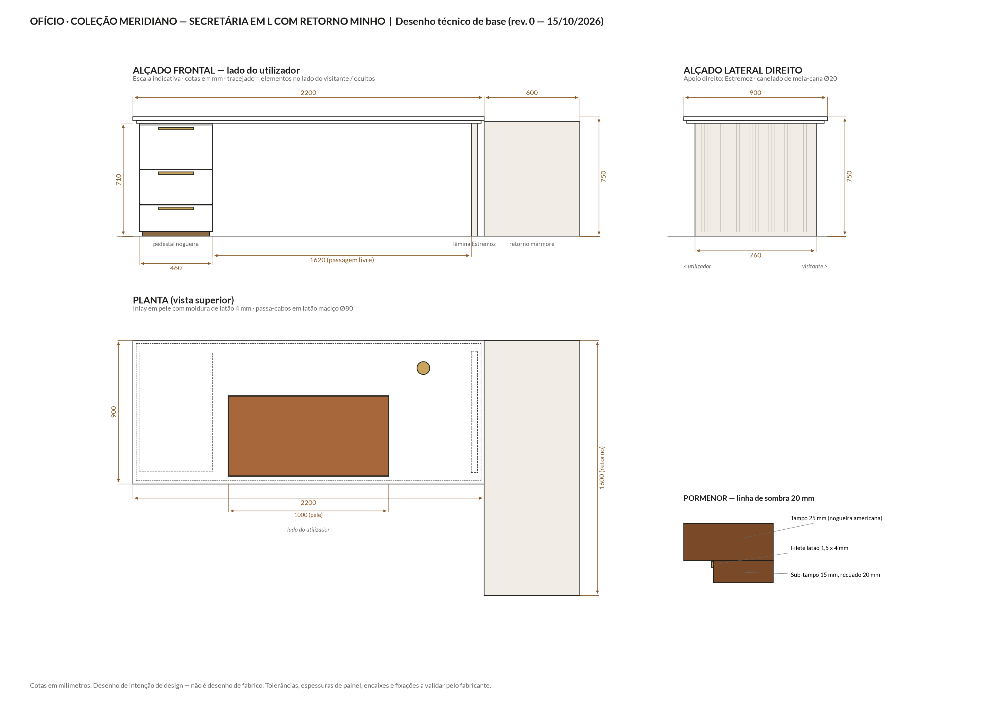

x.classList.remove('on'));this.classList.add('on')">
x.classList.remove('on'));this.classList.add('on')">Pedra portuguesa em destaque: um retorno maciço em mármore de Estremoz abraça a secretária de nogueira.
| L × P × A | 2200 × 900 × 750 mm + retorno 600×1600 mm |
| Superfície de escrita | 1000 × 500 mm |
| Altura útil | 710 mm |
| Tampo | Nogueira americana |
| Pele | Plena flor semi-anilina Tabaco |
| Pedestal | Nogueira canelado |
| Lâmina | Estremoz |
| Retorno | Mármore branco de estremoz |
| Metais | Latão e bronze escovados |
Uma secretária em L com 2,2 m e retorno de 1,6 m. O corpo principal em nogueira tem um pedestal de três gavetas com canelado de meia-cana; o retorno é um volume em mármore branco de Estremoz, o mármore português por excelência, com tampo de 30 mm e frente canelada. O tampo em nogueira flutua sobre a linha de sombra de 20 mm com o filete "meridiano" em latão; superfície de escrita em pele plena flor Tabaco. A peça mais distintiva da coleção: nenhuma marca de referência usa pedra portuguesa.
